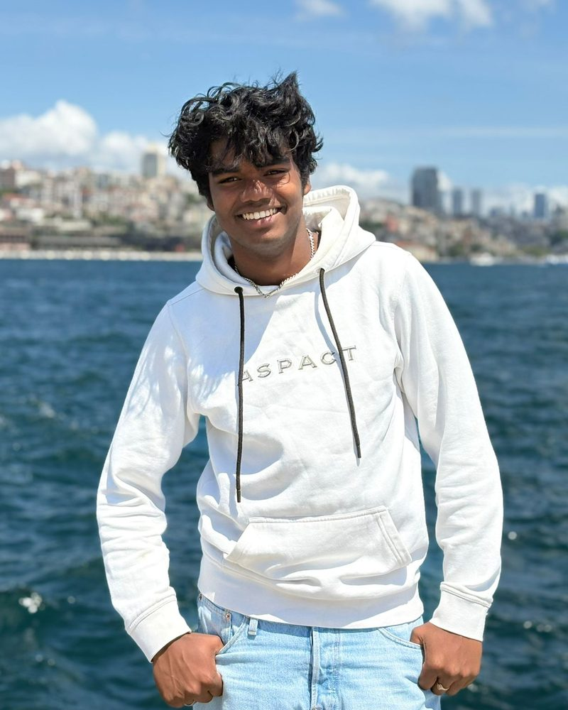

Over Thomas
Hoi, ik ben Thomas.
In december 2023 zette ik mijn eerste stap als ondernemer. Sindsdien heb ik niet meer stilgezeten.
Oprichter en eigenaar van LUX Media en Deekman Enterprises. Student Commerciële Economie aan de Hogeschool Leiden.

Mijn verhaal
Van een idee naar twee bedrijven
Wat begon als een idee, werd al snel LUX Media: mijn eigen mediabedrijf voor video, fotografie, social media, drone en events. Daar breng ik mijn passie voor creativiteit en communicatie tot leven.
Niet veel later volgde Deekman Enterprises. Daarmee investeer ik in de groei van veelbelovende bedrijven en projecten: met websites, online marketing en software die we zelf bouwen, zoals Paginapuls en Leerpuls.
Voor mij was dat het begin van een avontuur. Een avontuur waarin ik mijn enthousiasme, discipline en drive omzet in iets dat blijft.
Wat me drijft
Ik geloof dat je het snelst groeit door leren, ondernemen en praktijkervaring te combineren. Daarom studeer ik naast het ondernemen Commerciële Economie aan de Hogeschool Leiden, na mijn mbo-opleiding Marketing & Communicatie. Precies die combinatie geeft me elke dag nieuwe energie.
Mijn doel is helder: mijn kennis, creativiteit en energie inzetten op plekken waar ik kan blijven leren én anderen kan inspireren.
Ondernemen is voor mij niet alleen bouwen aan bedrijven. Het is investeren in groei: van ideeën, van mensen en van mezelf.
Thomas Deekman
Waar ik in geloof
Drie dingen die alles bepalen
Leren
Elke dag iets nieuws. Op school, in mijn bedrijven en van de mensen met wie ik werk.
Ondernemen
Niet wachten, maar beginnen. Een idee wordt pas iets waard als je het gaat bouwen.
Praktijk
Theorie meteen toepassen. Wat ik leer, gebruik ik direct in echte projecten voor echte klanten.
Zin om samen iets te bouwen?
Of het nu gaat om je website, je vindbaarheid of een nieuw idee: ik hoor graag waar je mee bezig bent.